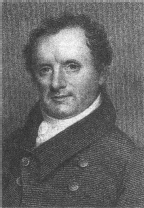

Listen to Part 1:

James Fenimore Cooper sinh ngày 15 tháng 9 năm 1789 tại New Jersey, Bắc Mỹ. Gia đình ông sống trong một trang trại tại Cooperstown, miền Bắc tiểu bang New York.
Cooper có năm anh trai và bảy chị gái. Ông theo học tại Yale. Nhưng vì không cư xử tốt nên ông đã phải rời khỏi. Năm 1805, Cooper trở thành một thủy thủ. Ông phục vụ trong Hải quân Hoa Kỳ cho đến năm 1810. Cha của Cooper mất năm 1811. Ông kết hôn với Susan De Lancey và sống tại trang trại. Từ năm 1812 đến năm 1821, Cooper đã làm việc rất chăm chỉ. Nhưng ông rất nghèo. Ông dành nhiều tiền cho anh chị em mình. Năm 1820, ông bắt đầu viết truyện. Những câu chuyện phiêu lưu của Cooper kể về cuộc sống ở những cánh rừng và vùng đất hoang dã của Bắc Mỹ.
Người Mohican cuối cùng là câu chuyện nổi tiếng nhất của Cooper. Nhiều người yêu thích những cuộc phiêu lưu của Hawk-eye. Cooper trở nên giàu có và đã đi du lịch châu Âu.
Cooper đã viết năm câu chuyện về Hawk-eye: Những người tiên phong (1823), Người Mohican cuối cùng (1826), Người tìm đường (1840) và Người săn nai (1841). Ông cũng đã viết Điệp viên (1821), Thuyền trưởng (1823) và Đồng cỏ (1827). James Fenimore Cooper mất ngày 14 tháng 9 năm 1851.